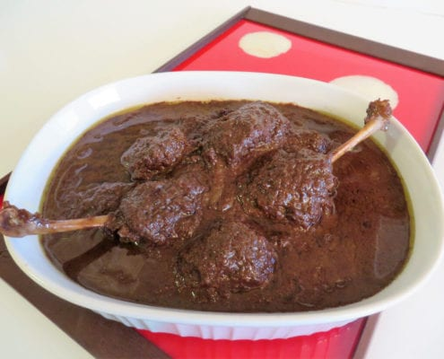

Fesenjan

Description
This iconic stew, an essential part of every Persian wedding menu.
Khoresht-e fesenjan traditionally made with duck, this dish also works well with chicken or lamb. In the north of Iran it is sometimes made with fish. It is a relatively easy khoresht to make, but it must be cooked slowly to allow the flavours to develop in the sauce.
The consistency should be thick and creamy and the colour almost black.
The distinctive flavour combines the nutty taste of ground walnuts with the sweet and sour flavour of pomegranate syrup.
Ingredients
- 2 tablespoons olive oil
- 1 1/2 pounds chicken legs, cut up
- 1 white onion, thinly sliced
- 1/2 pound walnuts, toasted and finely ground in a food processor
- 1 teaspoon salt
- 4 cups pomegranate juice
- 1/2 teaspoon cardamom (optional)
- 2 tablespoons sugar (optional)